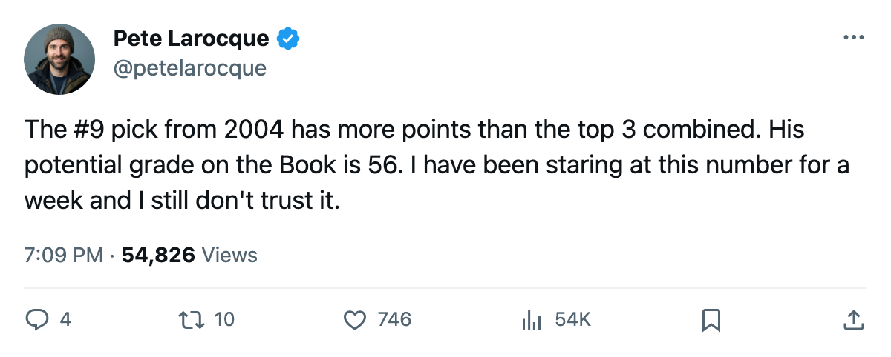
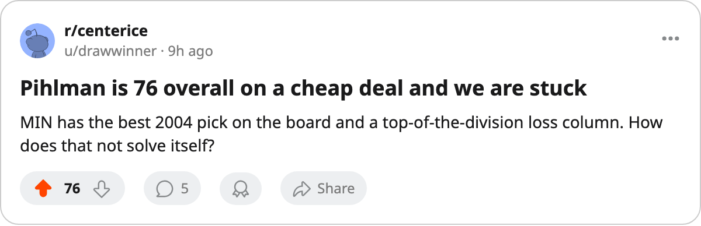

The #9 Pick Has Outscored the Top 3 Combined. His Potential Grade Is 56.
Tuomo Pihlman leads the 2004 first round with 39 points. The Bureau's Book says his ceiling is a 56.
 Pete LarocqueScouting editor · The Prospect File
Pete LarocqueScouting editor · The Prospect File
The top 3 picks from the 2004 draft have a combined point total that Pihlman alone has cleared. Not by a little. He sits at  Minnesota Wild with 2 contract years remaining, posting 14 goals and 25 assists in 33 games. Last season he managed 34 points across 73 games. In less than half that sample he has already beaten his full-season total.
Minnesota Wild with 2 contract years remaining, posting 14 goals and 25 assists in 33 games. Last season he managed 34 points across 73 games. In less than half that sample he has already beaten his full-season total.
The Bureau's Book prints a 56 potential on him. His overall reads 76. He is well above the grade the Bureau says he can reach, and the Development Index has him at +4 this edition. The Book does not move a potential number upward on a 21-year-old who was supposed to be a third-liner.
The top of the board went 1-for-5
The first 5 picks of 2004: Vaclav Spacek81 (4 points, 11 games), Kristian Timander74 (14 points, 38 games), Karel Duba75 (16 points, 35 games), Pasi Salminen73 (12 points, 0 goals, 35 games), and Sami Ronnqvist67 (6 points, 36 games). Pihlman alone has 39.
Salminen's line is the one that stings  Pittsburgh Penguins most. Zero goals in 35 games at pick 5. Twelve points, none from the goal column.
Pittsburgh Penguins most. Zero goals in 35 games at pick 5. Twelve points, none from the goal column.
The picks that produced were bunched in the 9-through-12 range. Pihlman at 9, Tuomas Lydman77 at 10 (23 points, 35 games, 1 year left at  Mighty Ducks of Anaheim), and Roger Nylander72 at 12 (21 points, 35 games, 1 year left at
Mighty Ducks of Anaheim), and Roger Nylander72 at 12 (21 points, 35 games, 1 year left at  San Jose Sharks).
San Jose Sharks).
The cheap contracts are the whole story
Every man from the 2004 class still on an entry-level deal has years of control attached to a production number the Bureau did not project. Timander at  Dallas Stars carries 2 years left. Duba at
Dallas Stars carries 2 years left. Duba at  Los Angeles Kings also carries 2. Pihlman's deal runs 2 more years.
Los Angeles Kings also carries 2. Pihlman's deal runs 2 more years.
Minnesota holds 38 points, 9 wins, 15 losses, and sits 4th in the Northwest with a 3-game losing streak. A winger producing 39 points in 33 games on a 2-year deal is not something a rebuilding club trades. The entry-level rates are identical across the class, whether you took the man or traded him.
| Pick | Player | Team | GP | Pts | Overall | Potential | Yrs left |
|---|---|---|---|---|---|---|---|
| 1 | Vaclav Spacek | TOR | 11 | 4 | 81 | 91 | 2 |
| 2 | Kristian Timander | DAL | 38 | 14 | 76 | 66 | 2 |
| 3 | Karel Duba | LA | 35 | 16 | 81 | 51 | 2 |
| 5 | Pasi Salminen | PIT | 35 | 12 | 70 | ||
| 6 | Sami Ronnqvist | MTL | 36 | 6 | 67 | ||
| 9 | Tuomo Pihlman78 | MIN | 33 | 39 | 76 | 56 | 2 |
| 10 | Tuomas Lydman | ANA | 35 | 23 | 73 | 1 | |
| 12 | Roger Nylander | SJ | 35 | 21 | 72 | 1 |
Spacek and the wait
Spacek, the #1 overall, has played 11 games for  Toronto Maple Leafs at 5.4 minutes a night. Four points. His overall is 81, his potential 91, his form +6. The Bureau thinks he is going to be very good. The ice says he is deep on a Toronto center depth chart that has 59 points and 25 wins. Toronto does not need to give him minutes. They have
Toronto Maple Leafs at 5.4 minutes a night. Four points. His overall is 81, his potential 91, his form +6. The Bureau thinks he is going to be very good. The ice says he is deep on a Toronto center depth chart that has 59 points and 25 wins. Toronto does not need to give him minutes. They have  Markus Naslund91,
Markus Naslund91,  Marian Gaborik99,
Marian Gaborik99,  Stanislav Chistov87. Spacek can wait.
Stanislav Chistov87. Spacek can wait.
The question the 2004 class raises is whether the Bureau's 56 potential means this is as high as he goes, and whether Minnesota can win anything with a 38-point season when their best asset from that draft was filed as a checking-role player.

